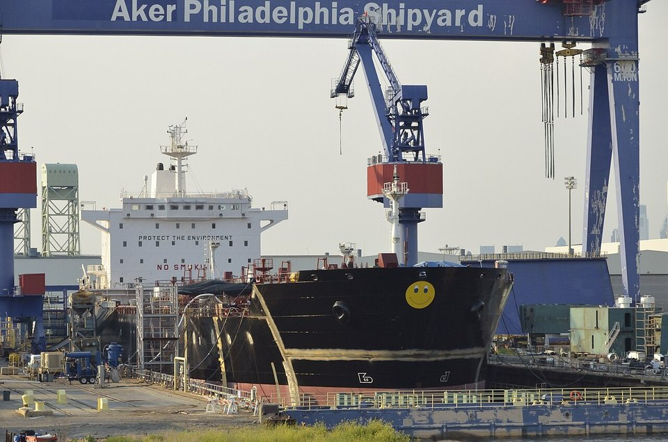
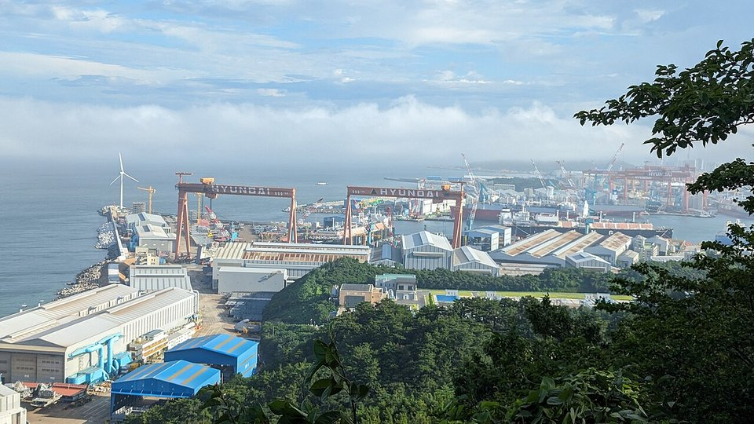
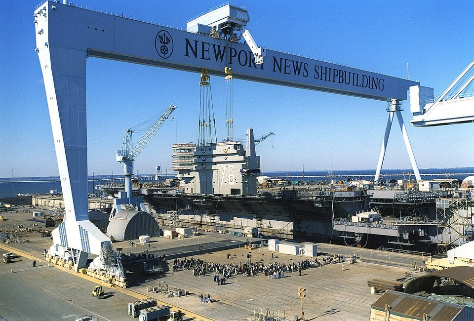

TRADE & POLICY · USA · 2026.10
川普重振美國造船業：港口費、韓國資金與鋼板商機
鋼鐵潮流工作室 · 發布 2026.10.05

本期重點
美國造船業萎縮多年，商船在全球市占微不足道，海軍造艦與維修能量也吃緊。川普政府把重振造船當成對抗中國的國安工程，三管齊下：對中國船收港口費、拉日韓資金與技術進美國、讓海軍破例向外國採購軍艦。對鋼鐵業而言，最直接的連動是造船厚板需求與鋼鐵關稅之間的矛盾。
- 港口費懸而未決。 對中國船收取的 301 港口費 2025 年 11 月起暫停一年，原訂 2026 年 11 月 9 日到期；財長貝森特 9 月宣布休戰延長，但正式公告尚未發布。
- 海事行動計畫。 2026 年 2 月公布，提出對所有外國建造商船收港口費、成立海事安全信託基金，須國會立法配合。
- 韓國資金入局。 美韓 3,500 億美元投資協議中，1,500 億美元用於造船合作（MASGA）；韓華收購費城船廠，HD 現代、三星重工也在卡位。
- 外國造艦破例。 川普 9 月簽備忘錄，海軍考慮向日、韓、土耳其採購驅逐艦，但國會軍事委員會強烈反對。
關鍵數字
中國新船訂單占比約 69%2025 年，以載重噸計；18 類船型中 16 類第一
301 港口費每淨噸 50 美元起對中國船東或營運的船按航次收費，暫停至 2026/11/9
韓國 MASGA1,500 億美元美韓 3,500 億美元投資協議中的造船合作
費城船廠50 億美元投資韓華收購，表態可建造核潛艦
外國造艦每家船廠 2 艘其後須在美國船廠建造（芬蘭模式）
鋼鐵關稅50%推高美國船廠鋼板成本
政策時間軸
- 2024.12韓華完成收購費城船廠
- 2025.04美國對中國船公布 301 港口費
- 2025.06鋼鐵關稅升至 50%
- 2025.07美韓協議含 1,500 億美元造船合作
- 2025.11港口費暫停一年
- 2026.02白宮公布海事行動計畫
- 2026.09.02川普簽外國造艦備忘錄
- 2026.11.09港口費暫停到期
港口費：對準中國造船
美國貿易代表署 2025 年 4 月依 301 條款調查結果，對中國相關船舶按每航次收費：
| 對象 | 收費 |
|---|---|
| 中國船東或營運商的船舶 | 每淨噸 50 美元起，至 2028 年每年再加 30 美元 |
| 非中國業者營運的中國建造船舶 | 每淨噸 18 美元或每個貨櫃 120 美元，取較高者 |
| 試算 | 一艘 5 萬噸級跨太平洋貨櫃船，每航次約 250 萬美元，2026 年費率下約 400 萬美元 |
2025 年 11 月美中達成休戰後暫停一年。2026 年 9 月下旬美中峰會後，財長貝森特宣布休戰延長至 2027 年 1 月 10 日，但依法須由貿易代表署在聯邦公報正式公告，截至 9 月 29 日尚未發布；逾 200 個產業團體已聯名要求正式延長。
海事行動計畫：四大方向
- 重建造船產能：現代化船廠、確保穩定訂單、擴充維修能量。
- 人才改革：強化船員訓練、簡化海巡署證照程序、擴編商船學院。
- 保護海事產業基礎：讓貿易政策與政府採購對齊國安需求。
- 國安與韌性：提升艦隊戰備與供應鏈自主。
主要財源構想包括對所有外國建造商船收取港口費（估計十年可收數百億美元）、擴大美國籍船舶的貨載優先權，以及對陸路進口商品收 0.125% 費用，成立海事安全信託基金。國會已有兩黨共同提出的《SHIPS 法案》與《在美國造船法案》。
韓國入局：MASGA 與費城船廠

- MASGA（讓美國造船業再次偉大）。 美韓 3,500 億美元投資協議中的 1,500 億美元造船合作，韓美造船合作中心 2026 年 7 月在華盛頓開幕。
- 三大船廠卡位。 HD 現代重工、韓華海洋、三星重工合計年營業利益接近 10 兆韓元，都在準備爭取美國訂單。
- 費城船廠。 韓華收購後，川普表示將獲 50 億美元投資；韓華並表態有能力在此建造核潛艦，川普也公開點名韓華在海軍巡防艦計畫中的角色。
- 可能分工。 在韓國建造船段、運到費城總裝，兼顧韓國的成本優勢與「美國建造」的法律要求。
外國造艦：備忘錄與國會阻力

- 備忘錄內容。 川普 2026 年 9 月 2 日簽署「重建美國海軍與造船工業基礎」國安備忘錄，海軍考慮採購日本最上級、韓國忠南級、土耳其伊斯坦堡級艦艇；每家外國船廠可先在本國建造 2 艘，其餘須在美國重振後的船廠建造。
- 法律障礙。 1920 年《瓊斯法》要求美國港口間航運須用美國建造的船，1965 年《伯恩斯－托勒夫森修正案》禁止在海外建造海軍艦艇。
- 國會反彈。 參眾兩院軍事委員會已提出修正案，禁止以聯邦經費購買非美國船廠建造的軍艦。
鋼鐵業怎麼看
- 造船就是厚板生意。 船體幾乎全由鋼板焊接而成，業界常估厚板約占商船建造成本兩成上下。商船多用經船級協會認證的 AH36、DH36、EH36 等等級造船鋼，數字代表降伏強度 36 kgf/mm²（約 355 MPa），A、D、E 對應不同溫度下的衝擊韌性要求；軍艦則需 HY-80、HY-100 等高強度鋼，認證門檻更高。
- 關稅與造船互相矛盾。 美國對進口鋼材課 50% 關稅，美國船廠的鋼板成本本已偏高，關稅進一步削弱「美國造」的價格競爭力，造船業者曾公開表達對鋼鋁關稅的憂慮。
- 美國本土供應考驗。 若造船訂單放量，美國厚板廠的產能、交期與軍規認證都是瓶頸；韓國「韓國造段、美國總裝」的模式，也可能讓部分鋼板需求留在韓國。
- 韓國鋼廠受惠。 韓國船廠接單增加，POSCO、現代製鐵的造船厚板需求隨之提高，但價格常與船廠拉鋸。
對台灣鋼鐵業的觀察
- 亞洲造船鋼板需求可能升溫。 若港口費恢復，船東新船訂單可能進一步從中國轉向日韓，帶動日韓造船厚板需求，中鋼厚板外銷有機會受惠，但日韓鋼廠會優先供應本國船廠。
- 美國市場仍難進入。 50% 鋼鐵關稅下，台灣鋼板直接供應美國船廠的空間有限。
- 國防造船連動。 台灣潛艦國造、無人艇等國防造船計畫，同樣需要高規格艦用鋼板，美日韓的國防造船趨勢值得對照。
觀察重點
- 11 月 9 日前，美國貿易代表署是否正式公告延長港口費暫停。
- 國會是否放寬《伯恩斯－托勒夫森修正案》，讓海軍向外國船廠採購。
- MASGA 的具體投資案、船廠擴建與首批艦艇訂單。
- 美國是否對造船用鋼材給予關稅豁免。
- 《SHIPS 法案》與海事安全信託基金的立法進度。
資料來源
- America's Maritime Action Plan（白宮，2026-02）
- White House Releases America's Maritime Action Plan（Holland & Knight，2026-02-25）
- USTR Section 301 Chinese Ship Fees Still Expire November 9（Tech Times，2026-09-29）
- 造船業衰退衝擊美海軍戰力 川普簽備忘錄準備採購「這3國」軍艦（新頭殼，2026-09-02）
- 美國海軍 擬採購日韓軍艦（聯合報）
- MASGA Sets Sail as US Weighs Building Warships in Ulsan, Geoje（Seoul Economic Daily，2026-07-16）
- US, South Korea reach $350bn investment deal with shipbuilding focus（Lloyd's List）
- Philly Shipyard to get $5 billion investment from South Korea（NBC Philadelphia）
- Hanwha signals readiness to build US nuclear submarines at Philly Shipyard（Korea Herald）
- China navigates US threats to anchor global shipbuilding dominance in 2025（SCMP）
- American shipbuilders brace for impact of tariffs on steel, aluminum（Professional Mariner）
內容僅供產業資訊參考，不構成投資建議。新聞版權屬原出處所有。